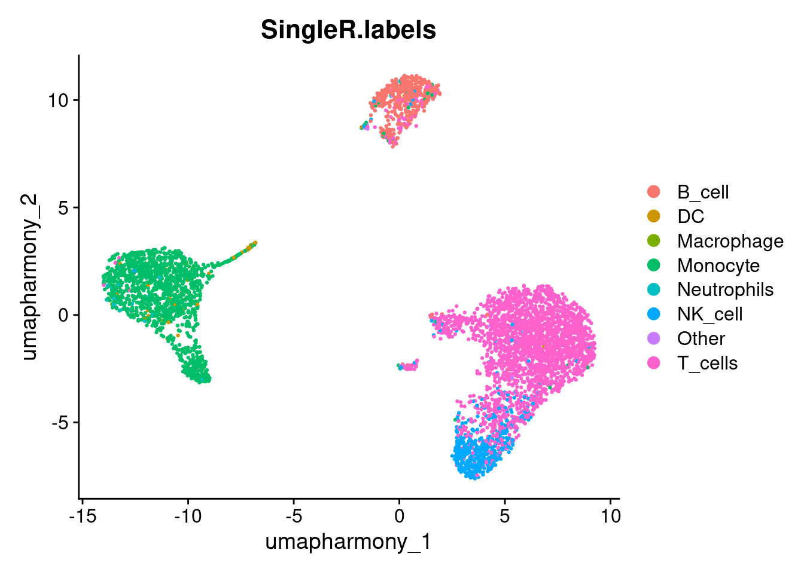
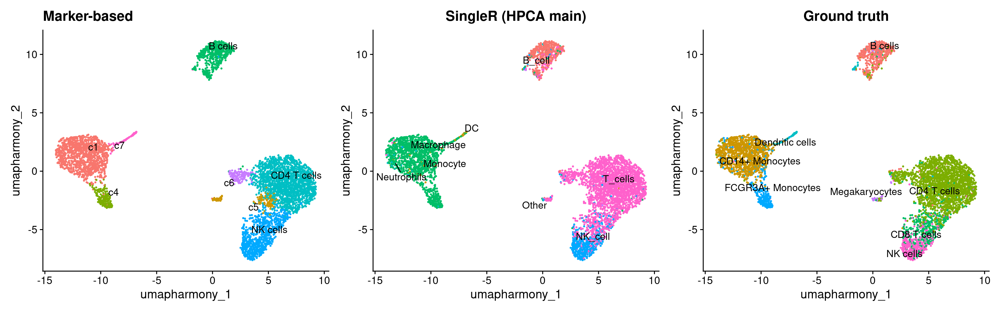

13 SingleR
13.1 Learning outcomes
- Apply bioconductor packages to automate cell type annotations
- Evaluate the trade-offs between reference-based and marker-based annotation
13.2 Overview
Why do we need to do this?
In the previous section we annotated clusters manually using canonical marker genes. This works well for well-characterised cell types, but it is slow, subjective, and depends on the analyst’s domain knowledge. Different researchers may reach different conclusions from the same data.
Reference-based annotation automates this process by comparing each cell’s expression profile against a curated reference dataset of known cell types. This is faster, reproducible, and less dependent on prior knowledge, making it easier to annotate large datasets or cell types you are less familiar with.
Read in our manually annotated seurat object.
seurat_object <- qs2::qs_read(here("data", "seurat_object_preprocessed.harmony.clustered.markers.qs2"))
Idents(seurat_object) <- seurat_object$markersIn this workshop we have focused on the Seurat package. However, there is another whole ecosystem of R packages for single cell analysis within Bioconductor. We won’t go into any detail on these packages in this workshop, but there is good material describing the object type online : OSCA.
For now, we’ll just convert our Seurat object into an object called SingleCellExperiment. This allows us to utilise the Bioconductor packages.
sce <- as.SingleCellExperiment(seurat_object)
#> Found more than one class "package_version" in cache; using the first, from namespace 'SeuratObject'
#> Also defined by 'alabaster.base'
#> Found more than one class "package_version" in cache; using the first, from namespace 'SeuratObject'
#> Also defined by 'alabaster.base'
#> Found more than one class "package_version" in cache; using the first, from namespace 'SeuratObject'
#> Also defined by 'alabaster.base'
#> Found more than one class "package_version" in cache; using the first, from namespace 'SeuratObject'
#> Also defined by 'alabaster.base'
#> Found more than one class "package_version" in cache; using the first, from namespace 'SeuratObject'
#> Also defined by 'alabaster.base'
#> Found more than one class "package_version" in cache; using the first, from namespace 'SeuratObject'
#> Also defined by 'alabaster.base'
#> Found more than one class "package_version" in cache; using the first, from namespace 'SeuratObject'
#> Also defined by 'alabaster.base'
#> Found more than one class "package_version" in cache; using the first, from namespace 'SeuratObject'
#> Also defined by 'alabaster.base'
sce
#> class: SingleCellExperiment
#> dim: 35635 4877
#> metadata(0):
#> assays(3): counts logcounts scaledata
#> rownames(35635): MIR1302-10 FAM138A ... MT-ND6 MT-CYB
#> rowData names(0):
#> colnames(4877): AGGGCGCTATTTCC-1 GGAGACGATTCGTT-1 ...
#> ATGTTGCTAAAAGC-1 GATGACACTAGCGT-1
#> colData names(24): orig.ident nCount_RNA ...
#> NK.cells1 ident
#> Found more than one class "package_version" in cache; using the first, from namespace 'SeuratObject'
#> Also defined by 'alabaster.base'
#> reducedDimNames(4): PCA UMAP HARMONY UMAP_HARMONY
#> mainExpName: RNA
#> Found more than one class "package_version" in cache; using the first, from namespace 'SeuratObject'
#> Also defined by 'alabaster.base'
#> altExpNames(0):We will now use a package called SingleR to label each cell. SingleR uses a reference data set of cell types with expression data to infer the best label for each cell. A convenient collection of cell type reference is in the celldex package which currently contains the follow sets:
ls('package:celldex')
#> [1] "BlueprintEncodeData"
#> [2] "DatabaseImmuneCellExpressionData"
#> [3] "defineTextQuery"
#> [4] "fetchLatestVersion"
#> [5] "fetchMetadata"
#> [6] "fetchReference"
#> [7] "HumanPrimaryCellAtlasData"
#> [8] "ImmGenData"
#> [9] "listReferences"
#> [10] "listVersions"
#> [11] "MonacoImmuneData"
#> [12] "MouseRNAseqData"
#> [13] "NovershternHematopoieticData"
#> [14] "saveReference"
#> [15] "searchReferences"
#> [16] "surveyReferences"We will use HumanPrimaryCellAtlasData because our dataset is human PBMCs - broad, well-characterised immune cell types that are well represented in this atlas. It provides both high-level (label.main) and fine-grained (label.fine) annotations.
This reference would be a poor choice if your data came from a specific tissue (e.g. brain, liver), a non-human species, or contained rare or novel cell types not present in the atlas (e.g. tumour cells). In those cases, you would need a more appropriate reference. For example a tissue-specific atlas or one built from your own annotated data.
Let’s download the reference dataset:
# This too is a sce object,
# colData is equivalent to seurat's metadata
ref.set <- celldex::HumanPrimaryCellAtlasData()HPCA contains two categories of labels at different granularities, main and fine. Display the main labels.
unique(ref.set$label.main)
#> [1] "DC" "Smooth_muscle_cells"
#> [3] "Epithelial_cells" "B_cell"
#> [5] "Neutrophils" "T_cells"
#> [7] "Monocyte" "Erythroblast"
#> [9] "BM & Prog." "Endothelial_cells"
#> [11] "Gametocytes" "Neurons"
#> [13] "Keratinocytes" "HSC_-G-CSF"
#> [15] "Macrophage" "NK_cell"
#> [17] "Embryonic_stem_cells" "Tissue_stem_cells"
#> [19] "Chondrocytes" "Osteoblasts"
#> [21] "BM" "Platelets"
#> [23] "Fibroblasts" "iPS_cells"
#> [25] "Hepatocytes" "MSC"
#> [27] "Neuroepithelial_cell" "Astrocyte"
#> [29] "HSC_CD34+" "CMP"
#> [31] "GMP" "MEP"
#> [33] "Myelocyte" "Pre-B_cell_CD34-"
#> [35] "Pro-B_cell_CD34+" "Pro-Myelocyte"An example of the types of “fine” labels.
head(unique(ref.set$label.fine), n = 20)
#> [1] "DC:monocyte-derived:immature"
#> [2] "DC:monocyte-derived:Galectin-1"
#> [3] "DC:monocyte-derived:LPS"
#> [4] "DC:monocyte-derived"
#> [5] "Smooth_muscle_cells:bronchial:vit_D"
#> [6] "Smooth_muscle_cells:bronchial"
#> [7] "Epithelial_cells:bronchial"
#> [8] "B_cell"
#> [9] "Neutrophil"
#> [10] "T_cell:CD8+_Central_memory"
#> [11] "T_cell:CD8+"
#> [12] "T_cell:CD4+"
#> [13] "T_cell:CD8+_effector_memory_RA"
#> [14] "T_cell:CD8+_effector_memory"
#> [15] "T_cell:CD8+_naive"
#> [16] "Monocyte"
#> [17] "Erythroblast"
#> [18] "BM"
#> [19] "DC:monocyte-derived:rosiglitazone"
#> [20] "DC:monocyte-derived:AM580"Now we’ll label our cells using the SingleCellExperiment object, with the above reference set. This will take a minute.
pred.cnts <- SingleR::SingleR(test = sce, ref = ref.set, labels = ref.set$label.main)Labels assigned to fewer than 10 cell are likely low-confidence predictions - too few cells to represent a genuine population. We collapse these into an “Other” category and transfer the remaining labels back to the Seurat object.
lbls.keep <- table(pred.cnts$labels)>10
seurat_object$SingleR.labels <- ifelse(lbls.keep[pred.cnts$labels], pred.cnts$labels, 'Other')
DimPlot(seurat_object, reduction='umap_harmony', group.by='SingleR.labels')
13.2.1 Comparing annotation methods
Before comparing, it is worth summarising what each approach offers:
| Reference-based (SingleR) | Marker-based (manual) | |
|---|---|---|
| Speed | Fast, automated | Slow, manual |
| Objectivity | Reproducible | Analyst-dependent |
| Flexibility | Bounded by reference | Uses any domain knowledge |
| Limitations | Misses cell types absent from reference | Subjective, error-prone |
The $cell column in our metadata contains the cell type labels provided by the original dataset authors. We can use these as a ground truth to assess both annotation approaches side by side.
library(patchwork)
p1 <- DimPlot(seurat_object, reduction = "umap_harmony", label = TRUE, repel = TRUE) +
ggtitle("Marker-based") + NoLegend()
p2 <- DimPlot(seurat_object, reduction = "umap_harmony", group.by = "SingleR.labels",
label = TRUE, repel = TRUE) +
ggtitle("SingleR (HPCA main)") + NoLegend()
p3 <- DimPlot(seurat_object, reduction = "umap_harmony", group.by = "cell",
label = TRUE, repel = TRUE) +
ggtitle("Ground truth") + NoLegend()
p1 | p2 | p3
To go beyond the visual and count exact agreement, compare SingleR labels against the ground truth:
table(SingleR = seurat_object$SingleR.labels, Ground_truth = seurat_object$cell)
#> Ground_truth
#> SingleR B cells CD14+ Monocytes CD4 T cells
#> B_cell 424 0 5
#> DC 2 14 1
#> Macrophage 0 9 0
#> Monocyte 12 1039 9
#> Neutrophils 3 23 0
#> NK_cell 4 0 19
#> Other 5 0 2
#> T_cells 41 2 2031
#> Ground_truth
#> SingleR CD8 T cells Dendritic cells FCGR3A+ Monocytes
#> B_cell 0 9 3
#> DC 0 25 4
#> Macrophage 0 0 2
#> Monocyte 0 44 293
#> Neutrophils 0 0 3
#> NK_cell 95 5 2
#> Other 1 2 3
#> T_cells 326 1 2
#> Ground_truth
#> SingleR Megakaryocytes NK cells
#> B_cell 6 0
#> DC 0 0
#> Macrophage 0 0
#> Monocyte 8 2
#> Neutrophils 0 0
#> NK_cell 5 338
#> Other 5 0
#> T_cells 24 24Exercise: Fine-grained annotation
Rerun SingleR using label.fine instead of label.main and plot the results.
# Add your code hereFine-grained labels capture biologically meaningful distinctions that broad labels miss — for example, separating CD4+ naive from CD4+ memory T cells. However, the more granular the labels, the harder it is for the algorithm to distinguish them reliably: closely related subtypes have very similar expression profiles, and the reference may not have enough examples of each subtype to anchor them confidently. In practice, run both: use label.main to confirm the broad populations are correct, then apply label.fine to any cluster where a finer distinction matters for your biological question.
#qs2::qs_save(seurat_object, here("data", "seurat_object_preprocessed.harmony.clustered.markers.singler.qs2"))